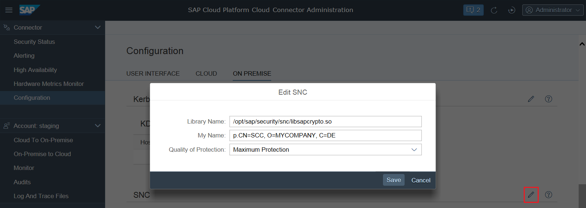

Initial Configuration (RFC)
SNC Configuration for Mutual Authentication
To set up a mutual authentication between Cloud connector and an ABAP back-end system (connected via RFC), you can configure SNC for the Cloud connector. It will then use the associated PSE for all RFC SNC requests. This means that the SNC identity, represented by this PSE needs to:
- Be trusted by all back-end systems to which the Cloud connector is supposed to connect;
- Play the role of a trusted external system by adding the SNC name of the Cloud connector to the SNCSYSACL table. You can find more details in the SNC configuration documentation for the release of your ABAP system.
Prerequisites
You have configured your ABAP system(s) for SNC. For detailed
information on configuring SNC for an ABAP system, see also Configuring SNC on AS ABAP. In order to establish trust for
Principal Propagation, follow the steps described in Configuring Principal Propagation to an ABAP System for RFC.
Configuration Steps
- Logon to the Cloud connector
- Choose Configuration from the main menu and go to tab On Premise, section SNC.
- Enter the corresponding values in the fields Library Name, My Name and Quality of Protection
- Press Save.
Example:

- Library Name: Provides the location of
the SNC library you are using for the Cloud connector. Note Bear in mind that you must use one and the same security product on both sides of the communication.
- My Name: The SNC name that identifies the Cloud connector. It represents a valid scheme for the SNC implementation that is used.
- Quality of Protection: Determines the level of protection that you require for the connectivity to the ABAP systems.
- Library Name: Provides the location of
the SNC library you are using for the Cloud connector.
Note When using CommonCryptoLibrary as SNC implementation,
note 1525059  will help you to configure the PSE to be
associated with the user running the Cloud connector
process.
will help you to configure the PSE to be
associated with the user running the Cloud connector
process.
will help you to configure the PSE to be
associated with the user running the Cloud connector
process.